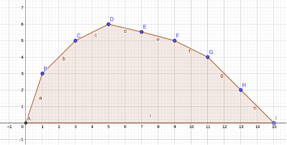
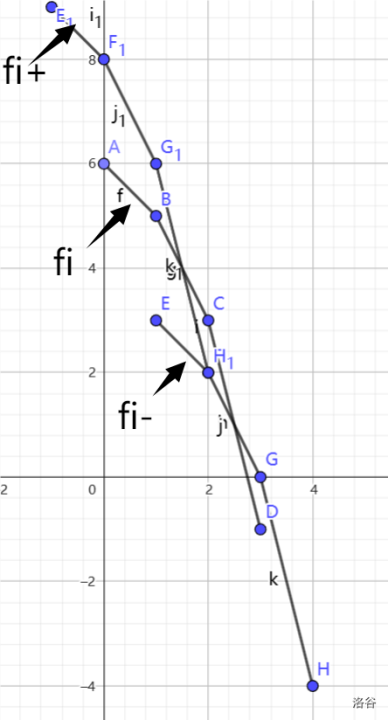

键入以搜索…
匹配算法：把输入按空格拆分，单独匹配每一段输入（不区分大小写，仅匹配文章文本内容），输出取或后的结果。
模糊搜索似乎很难搞，目前没有相关打算。
键入以搜索…
匹配算法：把输入按空格拆分，单独匹配每一段输入（不区分大小写，仅匹配文章文本内容），输出取或后的结果。
模糊搜索似乎很难搞，目前没有相关打算。
袜，这篇文章一下子创建了三个新 tag。
在信息学中研究的凸函数大抵是只在正整数域上有定义的，所以只能直接摒弃导函数的概念了。
若斜率递增，换言之，差分数组递增，认为函数是凸的（好反直觉）。
或者看看符号化的定义：若对于任意 \(\lambda\in[0,1]\)，函数 \(f(x)\) 均满足：
\[ f(\lambda x+(1-\lambda) y)\le \lambda f(x)+(1-\lambda) f(y). \]
或等价地：
\[ f(x)-f(x - 1)\le f(x + 1) - f(x) \]
那么认为 \(f\) 是凸函数。
因为凹凸在性质上没区别，所以 下文施行暴政，将凹函数和凸函数统称为凸函数。
对于具体情境下的问题，怎么判断 DP 数组是否关于其某一维为凸函数？
相信相信的力量（最常用）。
对于分段问题，证明分出来的每一段满足四边形不等式。
值得一提的是，数学上不认为满足四边形不等式能够推出函数为凸。但这是信息学.jpg
其由两个凸函数线性相加得到：
对于 \(\forall\, \lambda,\mu\ge 0\) 和凸函数 \(f,g\)，若 \(h=\lambda f+\mu g\)，则 \(h\) 为凸函数。
此外，此时 \(h\) 的差分数组和 \(f,g\) 差分数组也满足上述关系。
其是两个凸函数的 闵可夫斯基和。
其由两个凸函数线性 max 得到。
对于两个凸函数的线性 min，一般不是凸函数，甚至可能是凹的。
在解题中主要用到的大概就是上面两条。
例：把 \(a_{1\sim n}\) 分为恰好 \(k\) 段，每段的代价为 \(sum^2+c\)（\(c\) 为给定的常数），问最小代价。\(n\le 2\times 10^5,a_i\le 10^9\)。
如果对段数没有要求，可以用斜优 \(O(n)\) 做。
加上了 \(k\) 的限制，DP 变成二维的，令 \(f_{i,j}\) 表示在 \(i\) 处分第 \(j\) 段，可以在第一维斜率优化，做到 \(O(nk)\)；亦或发现 \((i,j)\) 有决策单调性，然后四边形不等式优化到 \(O(n^2)\)。
我们发现 \(f\) 关于 \(j\) 这一维是凸的（而非上文的 \((i,j)\)），故将 \(f(n,j)\) 关于 \(j\) 的函数提取出来（记为 \(f_n(j)\)）。发现只有最高点是可以一次斜优快速求出来的，故可以认为在当前复杂度限制下，整个函数除了最高点以外都是未知的（注意可以在 DP 时记录极值点的横坐标，即分了几段）。
我们给每个 \(f_n(j)\) 加上 \(\alpha\cdot j\)（在本题中即将 \(c\gets c+k\)），勉强可以认为 \(\alpha\cdot j\) 是凸的，所以新函数 \(f'_n(j)\) 也是凸的。若 \(k>0\)，可以感受到极值点向左偏移，且随着 \(k\) 的增大，极值点不会右移；\(k<0\) 时同理。
结合几何观点，在 \(f_n\) 上的极值点可以用斜率为 \(0\) 的直线切到；而加上 \(\alpha\cdot j\) 的过程，其实就是切线斜率减去 \(\alpha\) 的过程。相当于令切线斜率为 \(-\alpha\)，看看能切到哪里。
故可以二分一个合适的 \(k\)，使得极值点的横坐标为 \(k\)。此时 \(f'_n(k)-\alpha\cdot k\) 即为待求。
WQS 二分参与的问题一般以如下形式呈现：
给定序列，将其恰好分为 \(k\) 段 / 恰好选 \(k\) 个，求最大 / 最小代价。
题目要求最大 / 最小值一般能够反映函数的凹凸性，可以根据这一点来猜。
考虑如下凸函数：

显然对于『凸出来』的点（即图中除了 \(E,H\) 以外的点），能切到的直线斜率为一个范围；而位于直线上的点（途中 \(E,H\)），能切到的直线斜率更是定死了。所以这要求你的二分精度需要略高一点。
对于 \(E\)（或 \(H\)），不能找到只过它一点的切线。根据 DP 的写法，记录的横坐标可能是最小的 \(D\)，也可能是最大的 \(F\)，此时你可以：
同时记录最小和最大的横坐标，看看 \(k\) 在不在中间。
题目要求最大代价时，记录最大横坐标，二分到一个极值点 \(k'\ge k\) 时，显然 \(\alpha'\ge \alpha\)，用 \(f'_n(k')-\alpha'\cdot k\) 更新答案（是赋值而不是取最值）；求最小代价时同理。
主要是需要记住斜率是 \(\alpha\)
的相反数，实在搞不清对应关系可以都试一试
https://www.luogu.com.cn/problem/P1484
首先，函数是凸的——感性理解即可。
接着，要求的是 \(\le k\) 时的最值。分为两种情况：\(k\) 是否右于原函数极值点。
好消息是整数域上一定有解（最后答案为整、倒推即可），所以不用打浮点数二分了。
#include <bits/stdc++.h>
const int lim = 1e6;
const long long inf = 1e18;
int main() {
#ifdef ONLINE_JUDGE
std::ios::sync_with_stdio(false);
std::cin.tie(nullptr), std::cout.tie(nullptr);
#else
std::freopen(".in", "r", stdin);
std::freopen(".out", "w", stdout);
#endif
int n, k;
std::cin >> n >> k;
std::vector<long long> a(n + 1);
for (int i = 1; i <= n; ++i)
std::cin >> a[i];
auto calc = [&](int c) {
std::vector<std::pair<long long, int> > f(n + 1);
auto mx = f.front();
auto upd = [&](auto &x, auto y) {
if (y.first > x.first || (y.first == x.first && y.second < x.second))
x = y;
return;
};
for (int i = 1; i <= n; ++i) {
f[i].first = mx.first + a[i] + c;
f[i].second = mx.second + 1;
upd(mx, f[i - 1]);
}
upd(mx, f[n]);
return mx;
};
auto t(calc(0));
if (t.second <= k) {
std::cout << t.first << '\n';
return 0;
}
auto res(-inf);
for (int l = -lim, r = lim, mid; l <= r; ) {
mid = (l + r) >> 1;
auto t = calc(mid);
if (t.second <= k)
res = t.first - (long long)mid * k, l = mid + 1;
else
r = mid - 1;
}
std::cout << res << '\n';
return 0;
}https://www.luogu.com.cn/problem/P4694
给所有光盘附一个奖励 \(mid\)，进行 WQS 二分。
然后内层就和 sequence 差得不是特别多，所以考虑反悔贪心。（？）
把路过的 \(-a_j\) 丢到大根堆里，尝试和 \(b_i\) 配对。如果 \(mid-a_i-b_i\ge 0\) 那么暂时配对，顺便把 \(b_i-mid\) 丢进去用于反悔，若 \(b_{i'}\) 选中了 \(b_i-mid\) 说明反悔，将 \(a_j\) 与 \(b_{i'}\) 配对。
贪心的时候需要记录已经配的对数，优先队列中需要对 \(-a_j\) 和 \(b_i-mid\) 打标记进行区分，匹配到前者时才增加成功对数。
发现整数域上仍然必有解（答案为整，倒推），不用打浮点数二分 neiher.
#include <bits/stdc++.h>
const long long inf = 2e9 + 5;
int main() {
#ifdef ONLINE_JUDGE
std::ios::sync_with_stdio(false);
std::cin.tie(nullptr), std::cout.tie(nullptr);
#else
std::freopen(".in", "r", stdin);
std::freopen(".out", "w", stdout);
#endif
int n, k;
std::cin >> n >> k;
std::vector<int> a(n + 1), b(n + 1);
for (int i = 1; i <= n; ++i)
std::cin >> a[i];
for (int i = 1; i <= n; ++i)
std::cin >> b[i];
auto calc = [&](long long mid) {
std::priority_queue<std::pair<long long, int> > q;
int cnt = 0;
auto res(0ll);
for (int i = 1; i <= n; ++i) {
q.emplace(-a[i], 1);
auto [v, ty] = q.top();
if (mid + v - b[i] >= 0) {
q.pop(), cnt += ty;
res += mid + v - b[i], q.emplace(b[i] - mid, 0);
}
}
return std::make_pair(cnt, res);
};
auto res(inf);
for (long long l = 1ll, r = inf, mid; l <= r; ) {
mid = (l + r) >> 1;
auto t(calc(mid));
if (t.first >= k)
r = mid - 1, res = -(t.second - k * mid);
else
l = mid + 1;
}
std::cout << res << '\n';
return 0;
}目标：尝试将 \(a_{1\sim n}\) 分割成恰好 \(k\) 段，定义 \(w(i,j)\) 为将 \([i,j]\) 作为一段的代价，求代价最值。其中 \(w(i,j)\) 满足四边形不等式。
不妨设求最小代价。定义 \(f(i,j)\) 在 \(i\) 处分第 \(j\) 段，那么有：
\[ f(i,j)=\min(f(i-1,p-1)+w(p,j)). \]
有定理：若 \(w(i,j)\) 满足四边形不等式，那么有 \(f(i-1,j)\le f(i,j)\le f(i,j+1)\)，从 \(f\) 定义出发很好感性理解。
那么可以从这一点出发，\(p\) 这一维就可以被摊掉，做到 \(O(n(n+m))\)。
有定理：若 \(w(i,j)\) 满足四边形不等式，那么 \(f_i(j)\) 是凸函数。
那很好了。直接冲刺 WQS 即可。
给定两个凸函数（当然是指 OI 中那种长得很直的函数），将它们的『边』拆下来过后，以某种方式拼在一起，使得最后得到一个新的凸函数。
按每条『边』的斜率归并一下就可以得到，显然答案存在且唯一，这个过程被称为闵可夫斯基和。可以发现这是一种最值 - 加卷积。
假设我们要求的 DP 数组是两个已知的子数组以类似的方法卷起来的，最后要求完整的 DP 数组（而非 WQS 中的单点值），就可以考虑闵可夫斯基和。
发现这个结构是很适合归并的，使用归并要求状态中含有版本维、因变量维。
https://www.luogu.com.cn/problem/P11459
定义 \(w_i\) 为将 \([i,i+L)\) 改为 MOO
的代价，问题转化为选取 \(1\sim \frac
nL\) 个不重区间的最小代价和。
尝试归并，每次将 \([l,mid]\) 和 \((mid, r]\) 卷起来。但是会有一点问题：如果恰好有区间卡在中间呢？
可以令 \(f_{l,r,0/1/2,0/1/2}(i)\)
表示在 \([l,r]\) 内选了 \(i\) 个
MOO，且两侧最远的被选点距离端点为 \(0/1/\ge 2\) 的 DP
值。然后可以进行相应的讨论、平移、闵可夫斯基和，最后将所有情况线性取 max
得到这一层的答案，容易发现得到的答案也是凸的。
#include <bits/stdc++.h>
const long long inf = 1e18;
int L;
int main() {
#ifdef ONLINE_JUDGE
std::ios::sync_with_stdio(false);
std::cin.tie(nullptr), std::cout.tie(nullptr);
#else
std::freopen(".in", "r", stdin);
std::freopen(".out", "w", stdout);
#endif
int n;
std::cin >> L >> n;
std::vector<int> a(n + 1);
std::vector<char> t(n + 1);
std::vector<long long> w(n + 1);
for (int i = 1; i <= n; ++i)
std::cin >> t[i];
for (int i = 1; i <= n; ++i)
std::cin >> a[i];
for (int i = 1; i <= n - L + 1; ++i) {
w[i] = a[i] * (t[i] != 'M');
for (int j = i + 1; j < i + L; ++j)
w[i] += a[j] * (t[j] != 'O');
// printf("[%d, %d]: %lld\n", i, i + L - 1, w[i]);
}
if (L == 1) {
std::sort(w.begin() + 1, w.end());
auto s(0ll);
for (int i = 1; i <= n; ++i) {
s += w[i];
std::cout << s << '\n';
}
return 0;
}
using arr = std::vector<long long>;
using brr = std::vector<arr>;
using crr = std::vector<brr>;
struct node {
crr f;
node(int len): f(L, brr(L, arr(len, inf))) {
for (int i = 0; i < L; ++i)
for (int j = 0; j < L; ++j)
f[i][j][0] = 0ll;
return;
}
brr& operator[] (int q) { return f[q]; }
};
auto upd = [&](arr &x, arr y) {
if (x.size() < y.size())
x.resize(y.size(), inf);
for (int i = 0; i < (int)y.size(); ++i)
x[i] = std::min(x[i], y[i]);
return;
};
auto merge = [&](arr l, arr r) {
arr out((int)(l.size() + r.size()) - 1), dl(l.size()), dr(r.size());
for (int i = 1; i < (int)l.size(); ++i)
dl[i] = l[i] - l[i - 1];
for (int i = 1; i < (int)r.size(); ++i)
dr[i] = r[i] - r[i - 1];
std::merge(dl.begin() + 1, dl.end(), dr.begin() + 1, dr.end(), out.begin() + 1);
out[0] = l[0] + r[0];
std::partial_sum(out.begin(), out.end(), out.begin());
return out;
};
std::function<node(int, int)> calc = [&](int l, int r) {
if (r - l + 1 < 2 * L) {
node res(1);
for (int ll = 0; ll < L; ++ll)
for (int rr = 0; rr < L; ++rr)
if (l + ll <= r - rr - L + 1) {
res[ll][rr].resize(2, inf);
for (int i = l + ll; i <= r - rr - L + 1; ++i)
res[ll][rr][1] = std::min(res[ll][rr][1], w[i]);
// printf("[%d, %d]: (%d, %d) = %lld\n", l, r, ll, rr, res[ll][rr][1]);
}
// for (int i = 0; i < L; ++i)
// if (l + i + L - 1 <= r) {
// printf("[%d, %d]: (%d, %d) = %lld\n", l, r, i, r - (l + i + L - 1), w[l + i]);
// res[i][r - (l + i + L - 1)].emplace_back(w[l + i]);
// }
return res;
}
int mid = (l + r) >> 1;
node tl(calc(l, mid)), tr(calc(mid + 1, r)), res((r - l + 1) / L + 1);
for (int ll = 0; ll < L; ++ll)
for (int rr = 0; rr < L; ++rr)
res[ll][rr] = merge(tl[ll][0], tr[0][rr]);
for (int ll = 0; ll < L; ++ll)
for (int rr = 0; rr < L; ++rr)
for (int i = 1; i < L && i < mid; ++i)
upd(res[ll][rr], merge(merge(tl[ll][i], tr[L - i][rr]), { 0, w[mid - i + 1] }));
for (int ll = 0; ll < L; ++ll)
for (int rr = L - 1; rr; --rr)
upd(res[ll][rr - 1], res[ll][rr]);
for (int rr = 0; rr < L; ++rr)
for (int ll = L - 1; ll; --ll)
upd(res[ll - 1][rr], res[ll][rr]);
// for (int i = 0; i < L; ++i)
// for (int j = 0; j < L; ++j) {
// printf(" (%d, %d): ", i, j);
// for (auto p : res[i][j])
// printf("%lld ", p);
// puts("");
// }
return res;
};
auto res(calc(1, n));
for (int i = 1; i <= n / L; ++i)
std::cout << res[0][0][i] << '\n';
return 0;
}https://www.becoder.com.cn/problem/47728
令 \(f_{i,j}\) 表示前 \(i\) 组选完占了 \(j\) 体积的最大价值。那么有 \(f_{i,j}=\max\{f_{i-1,k}+a_{i,j-k}\}\)。
袜，这个东西好凸的样子！啊？居然不是凸的？
事实上，有结论：若干个体积为 \(0\sim 4\) 的物品做背包，可以凑出值域内任意 \(24\) 的倍数。所以先把体积全部 \(-1\)，然后就可以得到体积为 \(0\sim 4\) 的物品。然后会发现他们按照模 \(12\) 的余数分别是凸的。
能感受到恶意了。然后就可以枚举体积，再闵可夫斯基和了。同样需要在状态中引入作为版本号的 \([l,r]\) 维，显然因变量是体积、版本号是组数。
#include <bits/stdc++.h>
const long long inf = 1e18;
int main() {
#ifdef ONLINE_JUDGE
std::ios::sync_with_stdio(false);
std::cin.tie(nullptr), std::cout.tie(nullptr);
#else
std::freopen("fake2.in", "r", stdin);
std::freopen(".out", "w", stdout);
#endif
int n, m = 0;
std::cin >> n;
std::vector<int> siz(n + 1);
std::vector<std::vector<int> > a(n + 1);
for (int i = 1; i <= n; ++i) {
std::cin >> siz[i], m += siz[i];
a[i].resize(siz[i] + 1);
for (int j = 1; j <= siz[i]; ++j)
std::cin >> a[i][j];
}
using arr = std::vector<long long>;
struct node {
std::vector<arr> f;
node(): f(12) {}
arr &operator[] (int q) {
return f[q];
}
};
auto merge = [&](arr &p, arr &q) {
arr res((int)(p.size() + q.size()) - 1), dp(p.size()), dq(q.size());
std::adjacent_difference(p.begin(), p.end(), dp.begin());
std::adjacent_difference(q.begin(), q.end(), dq.begin());
std::merge(dp.begin() + 1, dp.end(), dq.begin() + 1, dq.end(), res.begin() + 1, std::greater<long long> ());
res[0] = p[0] + q[0];
std::partial_sum(res.begin(), res.end(), res.begin());
return res;
};
auto upd = [&](arr y, arr &x, int tag) {
if (tag)
y.insert(y.begin(), -inf);
if (y.size() > x.size())
x.resize(y.size(), -inf);
for (int i = 0; i < (int)y.size(); ++i)
x[i] = std::max(x[i], y[i]);
return;
};
std::function<node(int, int)> calc = [&](int l, int r) {
if (l == r) {
node res;
for (int i = 1; i <= siz[l]; ++i)
res[i - 1].push_back(a[l][i]);
return res;
}
int mid = (l + r) >> 1;
node tl(calc(l, mid)), tr(calc(mid + 1, r)), res;
for (int p = 0; p < 12; ++p)
for (int q = 0; q < 12; ++q)
if (!tl[p].empty() && !tr[q].empty())
upd(merge(tl[p], tr[q]), res[(p + q) % 12], p + q >= 12);
return res;
};
auto res(calc(1, n));
for (int i = 0; i <= m - n; ++i)
std::cout << res[i % 12][i / 12] << ' ';
std::cout << '\n';
return 0;
}对于一个 OI 中的凸函数，它是由一些斜率单调的线段拼接成的图形。
在这个前提下，发现可以用整个函数的左 / 右端点值（截距）和 \((n-1)\) 个斜率 / 差分信息描述函数。而这有时比直接维护 \(n\) 个点值有着更优美的性质，唤其为 slope trick。
例如，关于斜率序列，如果定义域不大，可以直接维护；如果它的变化次数不多，可以利用它的单调性质，用单调数据结构维护；如果它的值域很小，可以直接维护拐点。
注意前两种方法一般关注横坐标对应的函数值，所以自变量一般是和操作次数一类有关的；而这里关注函数最值而弱化了具体横坐标，操作次数一般会作为待最优化的因变量，例如：
下面依次解决上述问题。
https://www.luogu.com.cn/problem/P4597
暴力地，令 \(f_{i,j}\) 表示 \(a_i\) 最终被修改为 \(j\)，容易写出 DP 式子 \(f_{i,j}=\min\limits_{k\le j}\{f_{i-1,k}\}+|a_i-j|\)。
然后就会发现它的定义域实在是太大了！那如果关注斜率的变化情况呢？
令 \(f_{i-1}(k)\) 的极值点为 \(k_m\)，分类讨论拆绝对值和 min：
当 \(j\le a_i\) 时，\(f_i(j)=\min\limits_{k\le j}\{f_{i-1}(k)\}+a_i - j\)。
当 \(j > a_i\) 时，\(f_i(j)=\min\limits_{k\le j}\{f_{i-1}(k)\}+j-a_i\)。
如果现在我们掏一个支持区间加斜率、区间推平斜率且维护区间函数最值点的数据结构，那就太逆天了。一个经典的解决方案是用堆维护线段斜率的差分（也就是差分的差分）。
发现整体修改次数是 \(O(n)\) 的，且如果只看比 \(k_m\) 更左的 \(j\)（更靠右的已经与极值无关所以不用维护），那么就只需要维护区间减法。
如果将一次区间前缀减法看作一次前缀右端点入队，显然左侧某点 \(a\) 的实际被减次数为 \(a\) 入队的次数 + 所有右于 \(a\)
点的元素的入队次数。用大根堆维护这些元素，就可以快速维护整个斜率序列。例如
3 2 2 1，代表 \(3\)
处斜率为 \(-1\)，\(2\) 处斜率为 \(-3\)，\(1\) 处斜率为 \(-4\)。
当 \(a_i\ge k_m\) 时（容易发现它会成为新的 \(k_m\)），直接把 \(a_i\) 加入大根堆，就可以把 \(\le a_i\) 的所有位置斜率减去 \(1\)。
什么你问在 \(k_m\) 和 \(a_i\) 之间的推平怎么办？由于唯一右于它们的拐点 \(a_i\) 入了一次队，所以中间的元素斜率自然是 \(-1\) 啊。
当 \(a_i<k_m\) 时，我们需要：
其实就会发现还有一些有趣的小性质，比如 \(k_m\) 与队首等价（用于实现）；\(k_m\) 右侧斜率全部为 \(1\)，也是唯一可以取到的正斜率。
袜写起来好简单。
#include <bits/stdc++.h>
int main() {
#ifdef ONLINE_JUDGE
std::ios::sync_with_stdio(false);
std::cin.tie(nullptr), std::cout.tie(nullptr);
#else
std::freopen(".in", "r", stdin);
std::freopen(".out", "w", stdout);
#endif
int n;
std::cin >> n;
std::vector<int> a(n + 1);
long long res = 0ll;
std::priority_queue<int> q;
for (int i = 1; i <= n; ++i) {
std::cin >> a[i];
if (i == 1 || a[i] >= q.top())
q.push(a[i]);
else {
res += q.top() - a[i];
q.pop(), q.push(a[i]), q.push(a[i]);
}
}
std::cout << res << '\n';
return 0;
}https://www.luogu.com.cn/problem/P3642
设 \(f_{u,d}\) 表示在 \(u\) 子树中所有叶子距根均为 \(d\) 的最小代价。那么有：
\[ f_{u,d}=\sum\limits_{(v, w)\in u}\min\limits_{0\le w'\le d}\{f_{v,d-w'}+|w-w'|\}. \]
可以归纳证明 \(f_{u,d}\) 为凸；和上一题相似地，考虑用 \(f_v\) 的堆得到 \(f_u\) 的堆。
首先最外层是一个线性加，这其实就是把差分数组 / 斜率加起来，放到我们这个堆里面就是合并两个堆。虽然你可能和我一样不认识可并堆，但是你可以和我一样不会 pd_ds。
再看内层，发现和上一题长得像但其实不一样，呜呜呜。发现 \(|w-w'|\) 是一个左右斜率分别为 \(-1,1\) 的分段函数，而左边类比可得斜率最大为 \(1\)。
由闵可夫斯基和，内层函数斜率 \(<-1\) 的部分来自 \(f_{v,d-w'}\)；\(=-1\) 的部分来自 \(f_{v,d-w'}\) 和 \(|w-w'|\) 的左半边（感谢 \(w'\) 是有下确界的）；\(=0\) 的部分来自 \(f_{v,d-w'}\)；\(>0\) 的部分我们不关心。
最终函数图像的变化：水平部分的左端点右移了 \(w\)。找到 \(f_{v,d}\) 中的水平线段和斜率为 \(1\) 的线段，令其在堆中的值 \(+w\) 就能达到平移的目的。
但需要注意，此时仍然需要 保留内层函数中斜率为 \(1\) 的部分，但斜率 \(>1\) 的部分被删除。原因如下：
容易发现由于 \(w'\) 的取值上限是 \(d\)，但 \(d\) 没有上界，所以每个内层函数的右侧都一定是一条斜率为 \(1\) 的射线；也就是说，每个外层函数一定有（儿子个数）个拐点（堆中元素），弹出这么多个就可以删除外层函数中斜率 \(>1\) 的线段，顺便找到斜率为 \(0\) 和 \(1\) 的线段。
#include <bits/stdc++.h>
#include <ext/pb_ds/priority_queue.hpp>
const int inf= 0x3f3f3f3f;
int main() {
#ifdef ONLINE_JUDGE
std::ios::sync_with_stdio(false);
std::cin.tie(nullptr), std::cout.tie(nullptr);
#else
std::freopen(".in", "r", stdin);
std::freopen(".out", "w", stdout);
#endif
int n, m;
std::cin >> n >> m, n += m;
std::vector<std::vector<std::pair<int, int> > > g(n + 1);
auto res(0ll);
for (int i = 2, fa, w; i <= n; ++i) {
std::cin >> fa >> w, res += w;
g[fa].emplace_back(i, w);
}
std::vector<__gnu_pbds::priority_queue<long long> > q(n + 1);
std::function<void(int)> DFS = [&](int x) {
if (g[x].empty())
q[x].push(0), q[x].push(0);
else
for (auto [i, w] : g[x]) {
DFS(i);
for (int j = 1; j < (int)g[i].size(); ++j)
q[i].pop();
long long t1 = q[i].top(), t0;
q[i].pop(), t0 = q[i].top(), q[i].pop();
q[i].push(t1 + w), q[i].push(t0 + w);
q[x].join(q[i]);
}
// fprintf(stderr, "size(%d) = %d\n", x, (int)q[x].size());
return;
};
DFS(1);
for (int i = 1; i <= (int)g[1].size(); ++i)
q[1].pop();
for (; !q[1].empty(); q[1].pop())
res -= q[1].top();
std::cout << res << '\n';
return 0;
}https://codeforces.com/problemset/problem/865/D
令 \(f_{i,j}\) 表示在第 \(i\) 天结束后持有 \(j\) 支股票的最大收益。则 \(f_{i,j}=\max\{f_{i-1,j},f_{i-1,j-1}-a_i,f_{i-1,j+1}+a_i\}\)。
（由于这里和 max 有关所以需要精细描述凹凸了）发现就是把三个（可能）经过平移的（可能）凹的函数做线性 max。虽然实际上的结论『函数在整点上是凹的』不算太显然，但是可以猜是凹的。
线性 max 在 slope trick 中是不太能体现的，但我们发现这里是同一个凹函数向左上、右下平移同一个向量，希望得到新的凹函数不管是从差分角度还是图象，都能得到新函数由左上部分斜率 \(>-a_i\) 的线段、两段斜率 \(=-a_i\) 的线段、右下部分斜率 \(<-a_i\) 的线段组成。此外，由于向左上平移的函数有一处离开了定义域，还需将其剔除。
值得注意的是，当 \(-a_i\) 比最小斜率还要小时会有变化，可以画图看一下。

发现定义域是相对小的（\(0\le j\le n\)），故用优先队列维护整个斜率序列就可以快速插入两个 \(k=-a_i\) 的线段。容易发现顶点在 \(j=0\) 处取得（从图象和定义都易知），最右侧是只买不卖的最劣方案，可以倒推。
#include <bits/stdc++.h>
int main() {
#ifdef ONLINE_JUDGE
std::ios::sync_with_stdio(false);
std::cin.tie(nullptr), std::cout.tie(nullptr);
#else
std::freopen(".in", "r", stdin);
std::freopen(".out", "w", stdout);
#endif
int n;
std::cin >> n;
std::vector<int> a(n + 1);
auto res = 0ll;
for (int i = 1; i <= n; ++i)
std::cin >> a[i], res -= a[i];
std::priority_queue<int> q;
q.push(-a[1]);
for (int i = 2; i <= n; ++i)
if (a[i] < -q.top())
q.push(-a[i]);
else
q.pop(), q.push(-a[i]), q.push(-a[i]);
for (; !q.empty(); res -= q.top(), q.pop());
std::cout << res << '\n';
return 0;
}